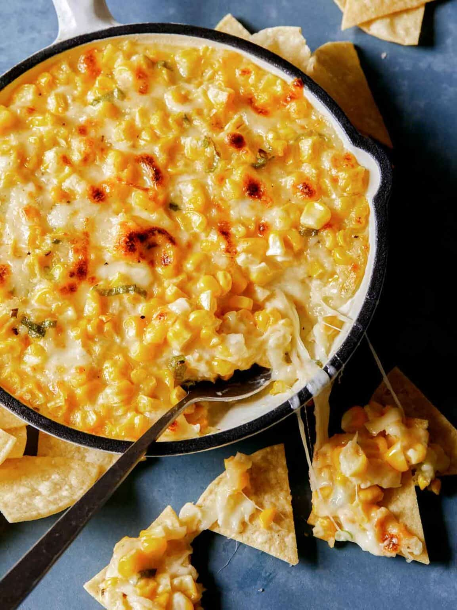

Odin Cheese Corn
Ingredients
- Corn
- Mayonnaise
- Shredded Mozzarella
- Sugar
- Green Onions
- Salt and Pepper
Tools needed
- Mixing Bowl
- Wooden Spoon
- Small skillet or baking dish
Instructions
- Preheat the oven to 400˚F.
- Combine all the ingredients into a mixing bowl and stir together. Season with salt and pepper and give it one more good stir.
- Pour mixture into a lightly greased baking dish.
- Bake corn cheese for 10 minutes to melt the cheese and heat through.
- Transfer the dish into the broiler and broil for about 2 minutes to make it bubbly and brown on top.
